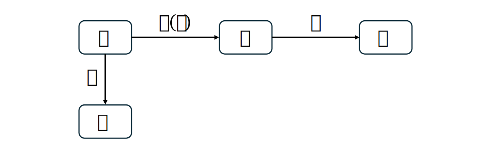
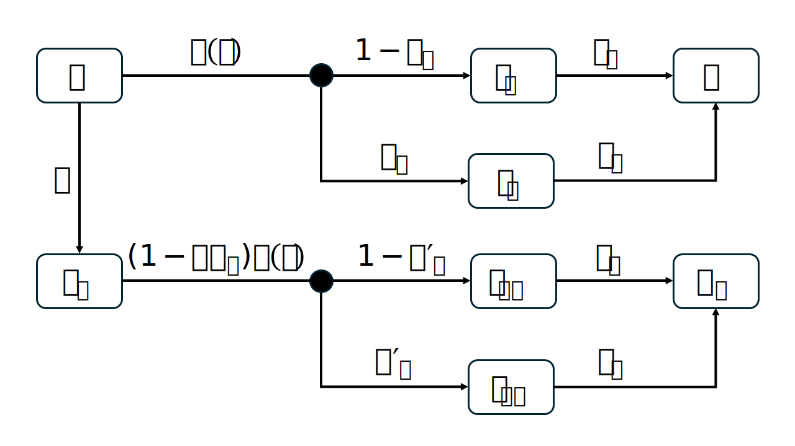
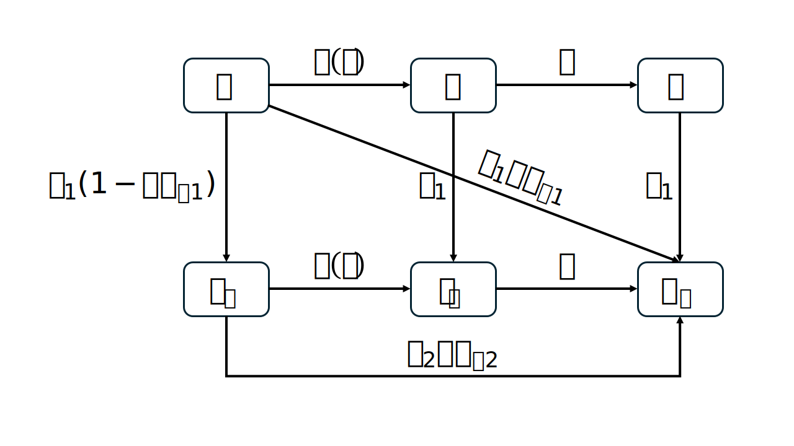

library(odin)
library(tidyr)
library(ggplot2)15 Model vaccination
Acknowledgement
This chapter is based on the teachings of my PhD supervisor, Dr. Marc Choisy, and a lecture given by Asst Prof. Hannah Clapham at MIDSEA Summer School 2024, for which I am deeply grateful.
To model vaccination, we need to decide 2 things:
What is the vaccine effect? Does it protect against infection, severe disease, transmission, or a combination?
How do we model the vaccine effectiveness?
15.1 Vaccine effects
15.1.1 Prevent infection
Vaccine prevents the pathogen from establishing an infection in the body. A vaccinated person is less likely to get infected.
Assuming a perfect vaccine against infection, the model can be designed as follows:

Vaccinated people \(V\) remain uninfected in their lifetime and do not participate in disease transmission.
15.1.2 Prevent severe disease
Vaccine reduces the severity of the disease if the vaccinated person does get infected. A vaccinated individual still get infected but experiences a much milder form of the disease.

Assuming a perfect vaccine against severe disease, the model can be designed as follows:
The infected population is split into a proportion of \(p_s\) for severe cases and \(1 - p_s\) for mild cases. Vaccinated people \(S_v\) still get infected, but will only experience mild disease.
15.1.3 Prevent transmission
Vaccine reduces the ability of a vaccinated individual, who becomes infected, to transmit the pathogen to others. A vaccinated person still get infected, still get sick, but they are less likely to spread the disease to others.

Assuming a perfect vaccine against transmission, the model can be designed as follows:

\(I\) being the only source of infection that contributes to the force of infection. Vaccinated people \(S_v\) still get infected and become \(I_v\), but they do not transmit the disease.
15.2 Imperfect protections
What is meant by a vaccine with effectiveness of 80% protection against a specific clinical endpoint? The mechanism of vaccine action is typically modelled in two ways:
15.2.1 All-or-nothing model
All-or-nothing (AoN, also called the polarized (Park et al., 2023), or take) model assumes that among vaccinated individuals, a proportion \(VE_P\) are completely protected, while the remaining fraction \(1 - VE_P\) remains completely unprotected (Park et al., 2023; Zachreson et al., 2023).
An effectiveness of 80% here implies that among vaccinated people, 80% are completely protected, and 20% receive no protection (World Health Organization, 2013).

Assumming a standard SIR model, vaccine protects against infection with vaccine effectiveness \(VE_P\), \(\rho\) represents the vaccination rate:
- Among the susceptible \(S\), \(\rho S\) are vaccinated.
- Among those \(\rho S\) who are vaccinated, \(\rho VE_P S\) are completely protected and go directly to \(R_v\), the remaining is \(\rho (1 - VE_P) S\).
- The remaining \(\rho (1 - VE_P) S\) are completely unprotected, and will be infected with force of infection \(\lambda(t)\) just like those who are unvaccinated.
\[\begin{align} \frac{dS}{dt} &= -\lambda(t) S - \rho S \\ \frac{dI}{dt} &= \lambda(t) S - \gamma I \\ \frac{dR}{dt} &= \gamma I \\ \frac{dS_v}{dt} &= \rho (1 - VE_P) S - \lambda(t) S_v \\ \frac{dI_v}{dt} &= \lambda(t) S_v - \gamma I_v \\ \frac{dR_v}{dt} &= \rho VE_P S + \gamma I_v \end{align}\]
15.2.2 Leaky model
Leaky (or degree) model assumes that all vaccinated individuals are partially protected (Zachreson et al., 2023).
An effectiveness of 80% here implies that all vaccinated people have the endpoint of interest reduced by 80% compared to non-vaccinees.

The assumption that no vaccinated people is totally or permanently protected implies one or both of the following (World Health Organization, 2013):
- No amount (titre) of the immune marker is totally protective or, if it is, no individual can maintain that titre for a long period (because of waning or transient immunosuppression)
- The degree of protection is a function of the level of the immune marker - the simplest explanation being that protection is a function of both the level of the immune marker and the challenge dose.
Assumming a standard SIR model, vaccine protects against infection with vaccine effectiveness \(VE_L\), \(\rho\) represents the vaccination rate.
- Among susceptible \(S\), \(\rho S\) are vaccinated.
- Among those \(\rho S\) who are vaccinated, force of infection \(\lambda(t)\) is reduced by a factor of \(1 - VE_L\).
\[\begin{align} \frac{dS}{dt} &= -\lambda(t) S - \rho S \\ \frac{dI}{dt} &= \lambda(t) S - \gamma I \\ \frac{dR}{dt} &= \gamma I \\ \frac{dS_v}{dt} &= \rho S - (1 - VE_L) \lambda(t) S_v \\ \frac{dI_v}{dt} &= (1 - VE_L) \lambda(t) S_v - \gamma I_v \\ \frac{dR_v}{dt} &= \gamma I_v \end{align}\]
15.3 Mixed effects
Imperfect vaccines often have a combination of effects: they can protect against infection, severe disease, and transmission at the same time.

Assuming a vaccine with leaky effectiveness \(VE_L\) against infection and severe disease, the model can be designed as follows:

- Among susceptible \(S\), \(\rho S\) are vaccinated.
- Among those \(\rho S\) who are vaccinated, force of infection \(\lambda(t)\) is reduced by a factor of \(1 - VE_L\).
- Vaccine reduces the proportion of severe disease from \(p_s\) to \(p_s'\).
15.4 Multiple doses
Some vaccines require multiple doses, like measles (2 doses) or rotavirus (2 doses), with varying effectiveness per dose. Below is the DynaMICE model (Verguet et al., 2015) for the 2-dose measles vaccine, assuming AoN effectiveness as in Figure 15.1 for both doses.

15.5 Code
15.5.1 A perfect vaccine against infection
pfvac_ode <- odin({
# Derivatives
deriv(S) <- -beta * S * I - rho * S
deriv(I) <- beta * S * I - gamma * I
deriv(R) <- gamma * I
deriv(V) <- rho * S
# Initial conditions
initial(S) <- N_init - I_init
initial(I) <- I_init
initial(R) <- R_init
initial(V) <- V_init
# Parameters and initial values
beta <- user(8.77e-8)
gamma <- user(0.2)
rho <- user(0.005)
N_init <- user(5700000)
I_init <- user(1)
R_init <- user(0)
V_init <- user(0)
})# Initialize model
pfvac_mod <- pfvac_ode$new()
# How long to run
times <- seq(0,300)
# Run the model
pred <- data.frame(pfvac_mod$run(times))Code
df_plot <- pivot_longer(pred, cols = S:V, names_to = "comp", values_to = "n")
ggplot(df_plot, aes(x = t, y = n, color = comp)) +
geom_line(linewidth = 1.2) +
scale_color_brewer(palette = "PuOr", breaks = c("S", "I", "R", "V")) +
labs(color = NULL, y = NULL, x = "Time") +
theme_minimal() +
theme(legend.position = "bottom")